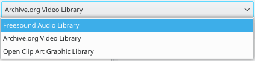
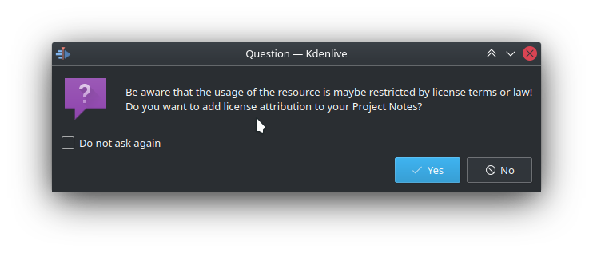
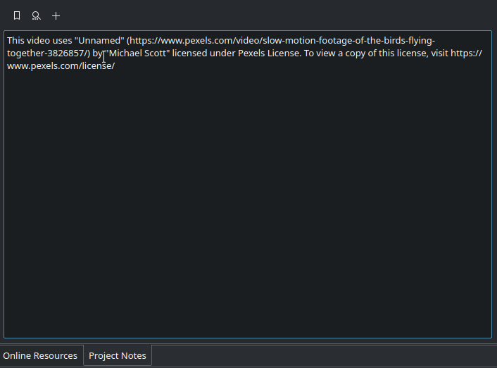
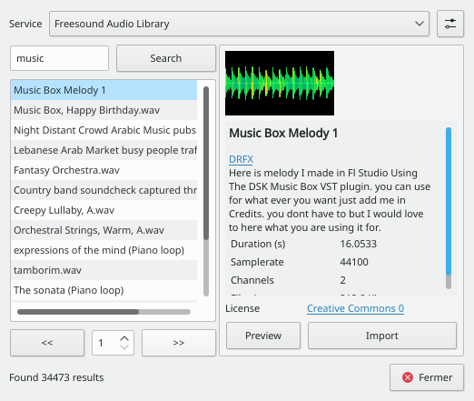
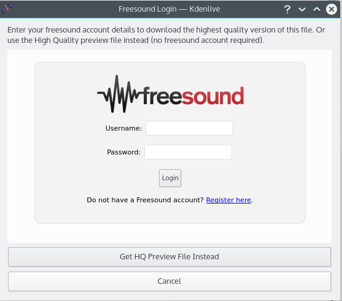
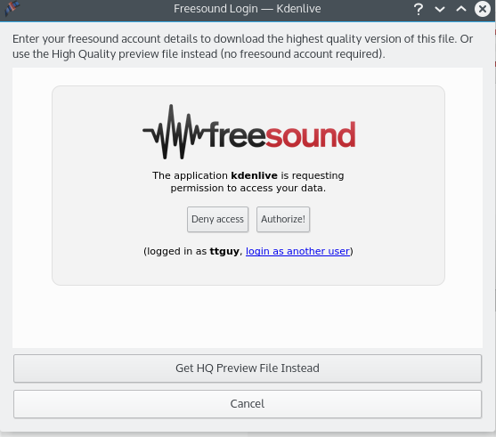

Online Resources¶
Contents
Available from the Project Menu menu and the Clips dropdown, this feature allows you to search online audio, video and graphics libraries for resources to download.
Since Version 21.04.0
The new online resources window features more source footage providers such as Pixabay and Pexels besides the already available Freesound and Internet Archive. Other possible providers are being considered, see here for more details.
VIDEO FILE online-resources-widget.mp4 MISSING
It is important to give credit to the downloaded sources so we’ve added an option to directly import the license attribution as a project note.
 Freesound Audio Library¶
The Freesound Audio Library part of this became non-functional on old versions of Kdenlive in October 2015 because freesound now requires user registration. If you are using an old version of Kdenlive, you can still download great audio clips from https://www.freesound.org/ – just not through the Kdenlive interface.
Version 15.12 (December 2015) allowed users to automatically download the high-quality .mp3 preview file from freesound using the Online Resources module.
Freesound Audio Library - Future version¶
A future version of Kdenlive will allow you to authenticate Kdenlive with your free freesound web account and download the high-quality files.
If the Online Resources dialog offers up this error, Error Getting Access Token from Freesound. Try importing again to obtain a new freesound connection hit the import button again to make it try to establish a new authentication handshake with the freesound website.
On hitting the import button, and if this is the first time you have used the freesound library, you will be presented with a login dialog where you can use your freesound account credentials to authenticate and download the highest-quality version of the audio file. If you do not have a freesound account, you can choose to download the high-quality .mp3 preview version of the file instead.
It might take a few seconds for the freesound web page to load in the window – be patient.
Once you have logged into the freesound system, you must grant Kdenlive permission to access your freesound account.
You can revoke Kdenlive’s access to your freesound account from the freesound website. Log in to your account and click the link in the App permissions section on the settings page “Manage your list of permissions granted to API applications” http://freesound.org/home/app_permissions/.
Once permission is granted, Kdenlive obtains authentication keys that it saves to the kdenlive config file (:file:` /~/.config/kdenliverc`). It uses these keys to automatically authenticate on future file import requests. Delete the tokens from the kdenlive config file to prevent this.
Archive Org Video Library¶
This searches the internet archives video library for video files that you can import into Kdenlive. Animated .gifs are displayed as video previews
Open Clip Art Graphic Library¶
This searches the Open Clip Art library for clip art that can be imported into Kdenlive